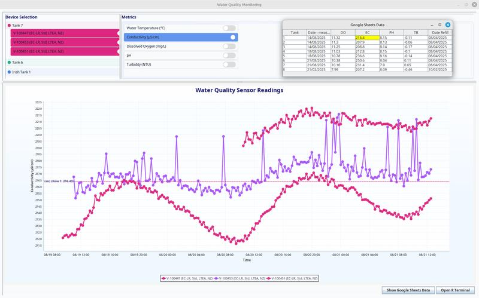
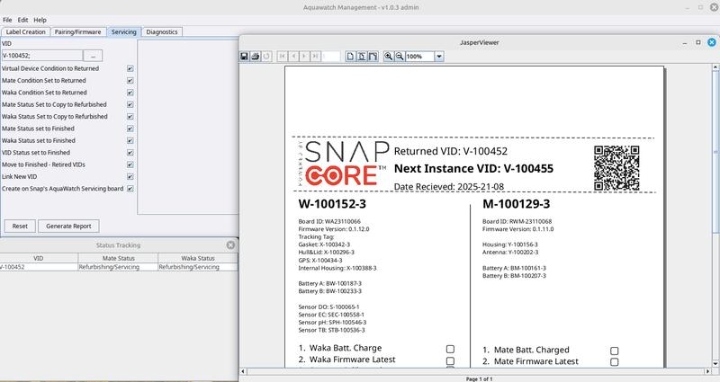
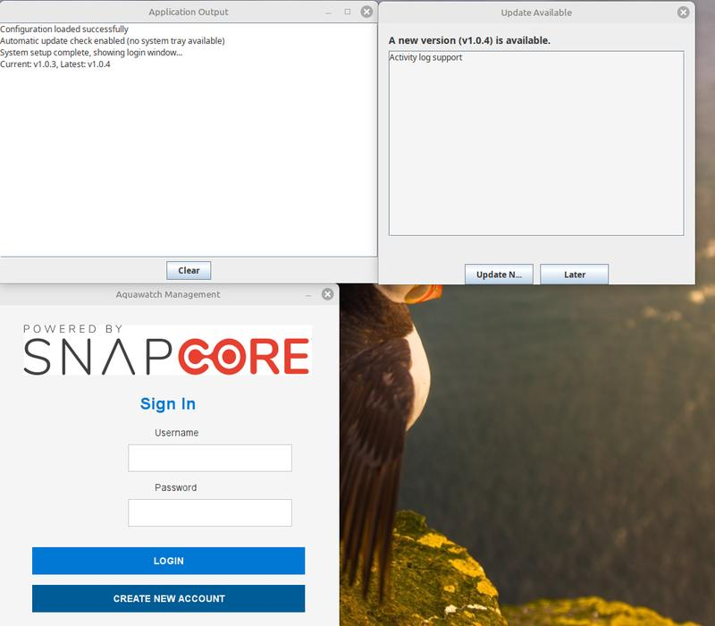
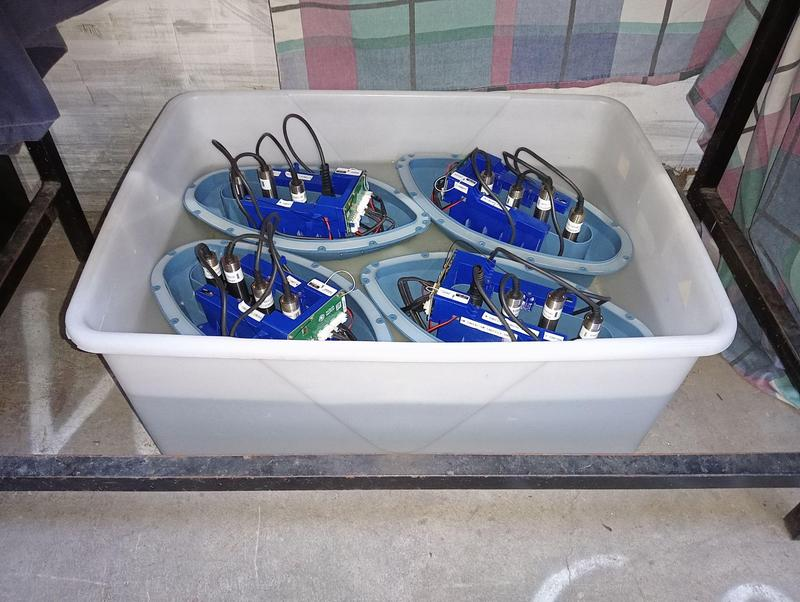
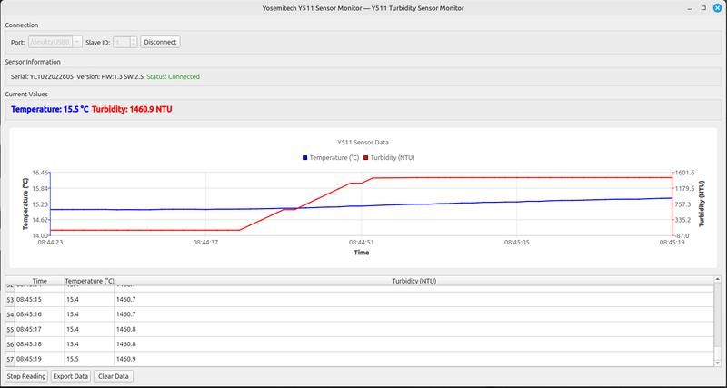
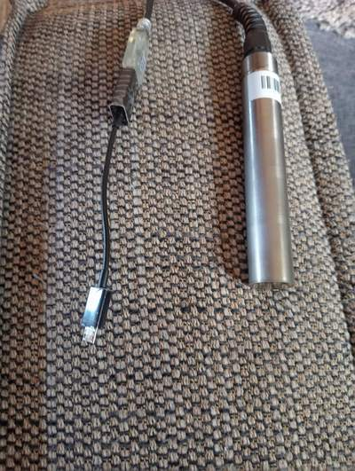
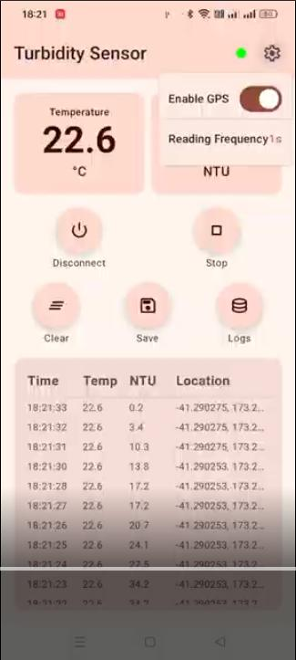

Jesse
Jacobs
software developer
Software developer with two years building production software at an IoT hardware startup. Experience across Java desktop applications, Kotlin/Android development, backend integrations, automation systems, and cloud-connected applications. AWS Certified and Graduate Diploma in Computer Science (Massey University).
Right now
Currently building
SouthStack — Web Development Studio
Growing the business, refining the service offering, and building the AI chatbot service. Currently completing first client projects.
Astro Claude API Netlify Functions RAGKaggle competitions
Planning first competition entries to build practical ML portfolio. Starting with tabular data and NLP competitions.
PyTorch Kaggle ML NLPBuilder at heart
Software developer with a background in mathematics, logistics, and manufacturing operations. Built production software supporting device management, manufacturing workflows, automation systems, diagnostics tools, and cloud-connected applications within a New Zealand hardware startup.
What I work with
Primary focus: Java, Kotlin, Android, backend development, automation systems, cloud services, and applied software engineering.
Languages
Mobile & Android
Web & Backend
Cloud & DevOps
Data & Databases
AI & ML
Projects I've built
AquaWatch Tool
Internal platform developed to automate manufacturing, testing, CRM integration, and device lifecycle management for an IoT monitoring company. Automated CRM onboarding, return-processing reports, sensor dashboards, and Bluetooth provisioning workflows. Native installer via JPackage with automated updates via GitHub Actions.



Digital Twin Visualisation
Digital twin for SnapCore water quality testing tanks. Displays real-time sensor data with automatic 15-minute refresh and tank-by-tank navigation.

Sensor Interface (Prototype)
Cross-platform desktop app for Yosemitech Y510 turbidity sensors. Real-time Modbus RTU over serial. Qt GUI. Runs on Linux and Windows. Built for lab and field deployment.

Kotlin Compose Modbus Sensor App
Android app for Modbus sensor interfacing via Bluetooth or USB serial. Jetpack Compose UI. Real-world deployment of Android + industrial protocols.


SouthStack — Web Studio
Founded and built SouthStack web development studio. Company website with embedded RAG AI chatbot using Claude API + Netlify Functions. Serving Canterbury businesses and churches.
University Assignments
Coursework: AI (A+), Mobile App Dev (A+), Algorithms & Data Structures (A-), OS & Networks (A-), Software Engineering Design (A), Programming Languages/Concurrency (A+).
EBNF-grammar parser/interpreter for a simple imperative string-processing language, and an n-body simulation using OpenMP.
FastAPI + vanilla-JS single-page app, and a Next.js / Tailwind / MongoDB booking site (live demo below).
Custom malloc memory allocator implemented in C.
Fuzzy logic controller, and an A*-search puzzle solver.
Professional Experience
Assembly Technician / Software Developer
- Built internal Java automation systems supporting manufacturing, testing, and device management workflows
- Developed GraphQL and Monday.com integrations, automated report generation, Bluetooth provisioning workflows, and operational dashboards
- Built Android and desktop applications for sensor configuration, monitoring, diagnostics, and deployment
- Worked directly with IoT water-quality monitoring devices including provisioning, calibration, troubleshooting, repair, and field deployment
- Performed exploratory data analysis using Grafana and contributed to technical documentation and quality-control processes
Founder
- Founded software and web development studio serving New Zealand organisations
- Built company website and AI-powered chatbot using Claude API, RAG techniques, and Netlify Functions
- Delivering web applications, automation solutions, and AI-assisted business tools
- Managing client relationships, project delivery, hosting, deployment, and technical architecture
Earlier operations, logistics & trades roles
Truck Driver
- Container transport between Blenheim, Motueka, and Port Nelson
- Class 5 freight operations including wine, hops, and general freight
- Forklift operation and export container loading
- Refrigerated goods delivery and logistics support
Tractor Driver
- Vineyard operations including mulching, rolling, and pruning
Previous Roles
- Joinery labourer
- Sawmill planer operator
- Excavator operator
- Stock assistant
- General labouring and construction support
Education & study
Graduate Diploma — Information Science (CS)
Graduate Diploma — Arts (Linguistics)
Bachelor of Arts — Mathematics
AWS Certified Cloud Practitioner
| Course | Code | Grade |
|---|---|---|
| Artificial Intelligence | 159302 | A+ |
| Mobile Application Development | 159336 | A+ |
| Programming Languages, Algorithms & Concurrency | 159341 | A+ |
| Critical Thinking | 134.103 | A+ |
| Introductory Physics | 124.100 | A+ |
| Mathematics in Education | 160.320 | A+ |
| Software Engineering Design and Construction | 159251 | A |
| Object-Oriented Programming | 159234 | A- |
| Algorithms and Data Structures | 159201 | A- |
| Operating Systems and Networks | 159342 | A- |
| Statistical Models | 161.200 | A- |
| Advanced Web Development | 159352 | TBC |
| Applied Linear Models | 161.221 | B+ |
| Data Analysis | 161.220 | B+ |
| Language and Society in New Zealand | 172.232 | B+ |
| Languages of the Pacific | 172.336 | B+ |
| Linguistic Analysis of the English Language | 172.235 | B+ |
| Linear Algebra | 160.211 | B+ |
| Analysis | 160.301 | B |
| Combinatorics | 160.314 | B |
| Field Methods | 172.334 | B |
| Language and Identity | 172.335 | B |
| Discrete Mathematics | 160.212 | B- |
| Introduction to Academic Writing | 230.100 | B- |
| Language and Culture | 172.239 | B- |
| Algebra | 160.302 | C |
| Calculus | 160.203 | C+ |
| Differential Equations I | 160.204 | C+ |
| Sounds and Structures | 172.330 | C+ |
| Introductory Statistics | 161120 | — |
| Mathematics 1A | 160111 | — |
| Mathematics 1B | 160112 | — |
GitHub activity
Public work and contributions. Private repos aren't shown here.
GitHub contribution activity — view full profile →
Skills in progress
Current skills I'm actively developing and what's planned next.
Working through fast.ai course. PyTorch foundations already in place from AI paper (A+).
Building on Cloud Practitioner cert. Lambda, DynamoDB, API Gateway, CodePipeline.
Building on strong Java foundations. Working through a dedicated Spring Boot course.
Notes & learnings
Short posts on things I've built, figured out, or found interesting. Powered by Sanity CMS — no redeploy needed to add new posts.
Let's talk
Open to software development, data engineering, and electronics roles in NZ. Remote or on-site. Nelson, Marlborough, Canterbury preferred.